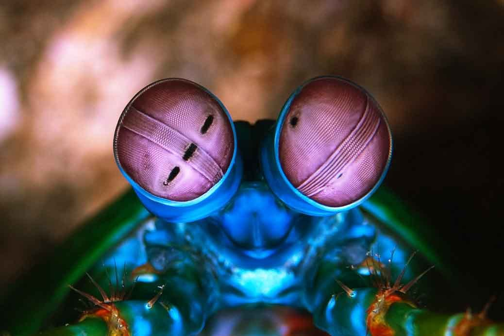

Fatos sobre o Stomatopoda
Odontodactylus scyllarus
O animal marinho Stomatopoda((Odontodactylus scyllarus)mantis shrimp), que não é nem um "louva a Deus" e nem um camarão, é um relativo próximo à caranguejos e lagostas. É um animal que possui olhos compostos(vários pequenos) que detectam luz independentemente. Este olhos são dividindos em faixas, e a faixa central é a qual que possibilitam o Stomatopoda ver cores.
| Reino | Filo | Subfilo | Classe | Subclasse | Ordem |
|---|---|---|---|---|---|
| Animalia | Arthropoda | Crustacea | Malacostraca | Hoplocarida | Stomatopoda |
Fato Interessante 1
O Stomatopoda vive em águas rasas e mornas e normalmente chega entre 15-30 centímetros de comprimento.

Fato Interessante 2
O mantis-shrimp é o único animal que possui uma visão/visão de cores melhor do que as borboletas.
Fato Interessante 3
Ele possui 16 cones receptores de cor . Para se ter uma comparação, nós humanos, possuimos apenas 3 desses.